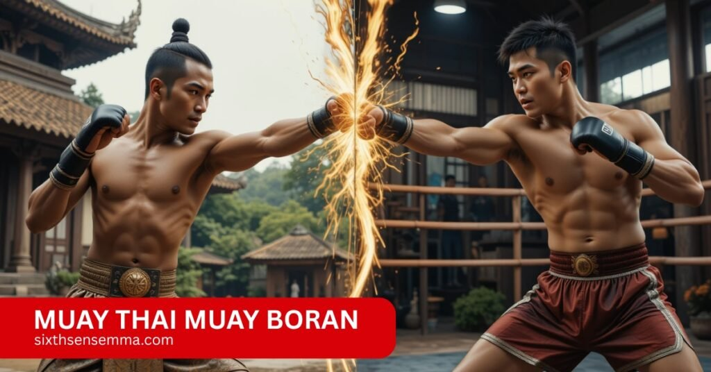
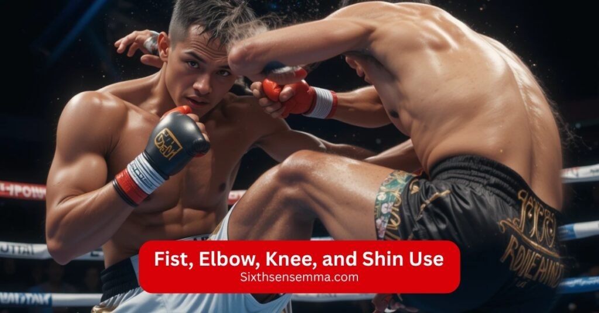

What you need to know about muay thai muay boran differences

Muay Thai Muay Boran come from the same Thai roots, but they differ in many ways. Muay Boran is an ancient martial art used for real self-defense with no limitations, while Muay Thai is a modern combat sport shaped by rigorous rules and made for competitive battles. Even though both have the same origins, their methods, objectives, and overall combat styles are not the same. People often find joy in learning both whether you’re a serious warrior or just a history buff who wants to feel the martial tradition of Thailand. These real-life differences help bring out the true enjoyment in training.
Train Muay Thai Muay Boran the Right Way at sixthsensemma
At sixthsensemma, we offer authentic Muay Thai Muay Boran training rooted in tradition and real technique. Our sessions are built for all levels focused, practical, and true to the art.
Where It All Began: Origins of Muay Thai and Muay Boran
The older style was more free form, intense, and not confined by strict rules or specific competition formats. Their techniques use the eight limbs of the body hand, foot, elbow, and knee , as targeted weapons to help fighters survive real battle.
This style was heavily influenced by military training and practiced in many areas for practical defense, including the back. Over time, the sport evolved with standardized regulations and became an international sport, balancing tradition with modern workout and fighting needs. Its influence remains strong, showing how the past shaped what is practiced today.
Read more: Muay Thai vs Kickboxing for Self-Defense, What Works Better
How Techniques Differ Between Muay Thai and Muay Boran
Different styles highlight unique strengths .Some rooted in spiritual tradition and self defense, others sharpened by modern striking and sport focus.Below the table, it is shown that they techniques are differ;
| Aspect | Traditional Style | Modern Style |
|---|---|---|
| Origin Regions | Lopburi, Korat, Chaiya | Thailand (general) |
| Techniques Used | Throws, locks, weapons (sticks), clinch, joint defense | Punches, elbows, shins, knees, boxing style strikes |
| Cultural Elements | Strong spiritual focus, meditation, respect for vulnerable areas like throat and eyes | More sport focused, less spiritual |
| Training | Intense sparring drills, self defense focus | Fitness and professional training, pad work |
| Recognition | Admired for effectiveness in self defense | Widely recognized internationally as a sport |
| Practice Areas | Traditional gyms and classes | Modern gyms and competitions |
| Admiration | Respected for rich history and cultural roots | Respected worldwide for athleticism |
Rules, Traditions, and Rituals That Set Them Apart
Rules, attire, and the way fighters compete show a clear blend of ancient tradition and modern sport, marking distinct differences in each style.
| Aspect | Muay | Boran |
|---|---|---|
| Rules | Set, strict rules and restrictions govern the fighting | Fewer rules and restrictions |
| Attire | Fighters wear shorts and gloves to protect fists | Traditionally bare hand or wrapped in hemp |
| Strikes Allowed | Defined, permissible strikes inside the ring | More freedom in strikes with focus on ritual and tradition |
| Competition Area | Ring with rope boundaries | Area often marked simply by rope |
| Match Setup | Divided into classes by weight and lengths of rounds | Less formal, focus on historical practice |
| Traditions | Modern sport with clear rules | Deeply traditional, focusing on rituals |
The rituals honor the physical techniques of Muay Boran and Muay Thai as well as their intention to defend themselves.
Signature Muay Thai Techniques
What sets Muay Thai apart is how it relies on all eight weapons fists, elbows, knees, and shins to create maximum impact with every move, and from my training, I saw how each strike must be trained heavily for precision, not just power; the real beauty is in the combination work, where timing and flow build control, and every movement delivers balance and force while maintaining your stance nothing in this art is random, it’s all about clean execution and total body balance.
Read more: Mixed Martial Arts Training Gloves: Types, Use & Top Brands
Fist, Elbow, Knee, and Shin Use
In real clinch exchanges, Muay Thai fighters depend on elbows, knees, and fists to break the opponent’s rhythm with quick jabs, uppercuts, and cutting strikes to the head and body at short range, while hooks, straight punches, and effective blocks flow naturally into powerful roundhouse kicks and thrust movements made possible by intense conditioning and hardened technique.

Clinch Work and Pad Training
In Muay Thai gyms, pad training is essential for building accuracy, timing, and dynamic combinations, while coaches use Thai pads and focus mitts to help fighters sharpen their elbows, knees, and precise strikes; on the other hand, clinch work teaches control through solid neck grips and has a strong emphasis on delivering clean strikes up close, which I found incredibly valuable when learning how to move with purpose and power in real situations.
Modern Ring Tactics
In today’s competitive settings, Muay Thai fighters use sharp footwork, precise timing, and tactical strikes to gain decisive control of the ring space, aligning with modern scoring systems that reward clean visual impact, offensive moves, and strong posture a big shift from Muay Boran and its battlefield roots, where survival oriented moves and close quarter tactics shaped the ancient system of Thai martial arts having trained in both, I see how strategies in Muay Thai now reflect more on round scoring and points, while still respecting the real world situations and legacy of muay thai boran techniques through smart controlling and defense that remain quick and rooted in purpose.
Read more: Muay Thai Clothing: Clothes, Style Ideas & Safety Tips
Unique Muay Boran Techniques
Muay Boran stands out for its battlefield roots and survival oriented moves, which were designed not for points but for real damage in real world situations; unlike modern Muay Thai, which focuses on scoring through clean striking, Muay Boran teaches an ancient system of Thai martial arts that uses quick, aggressive attacks and close quarter tactics to gain decisive control fast something I’ve seen firsthand while learning muay thai boran techniques that prioritize efficiency, awareness, and raw effectiveness beyond the ring.
Joint Locks, Throws, and Grappling
One thing that really sets Muay Boran apart from modern Muay Thai is how it uses grappling, locking skills, and powerful body throws to completely disable opponents, which comes from the art’s origins in military combat.I’ve practiced wrist locks and shoulder manipulations that feel more like self defense tactics than sport, showing that these techniques weren’t just for show but were created to end fights fast and survive dangerous encounters.
Eye and Throat Strikes, Traditional Stances
In Muay Boran, fighters use precision strikes aimed at vulnerable areas like the eyes, throat, and groin, which are often banned in modern competition but show the raw power of the techniques; these attacks come from strong rooted stances and stylized stances that focus on balance, power, and readiness, contrasting with the more mobile posture and upright posture seen in Muay Thai practicing these helped me understand how tradition shapes every more
Regional Styles: Muay Korat, Muay Lopburi, and Muay Chaiya
The regional variant styles of Muay Boran like Muay Chaiya, Muay Korat, and Muay Lopburi each bring a distinct strategy that shows how the art has evolved into today’s Muay Thai; I found Muay Chaiya focused on low stances, quick agility, and tight defense, while Muay Korat impressed me with its power, wide movements, and crushing elbow counters; on the other hand, Muay Lopburi used sharp punches, clever feints, and smooth forceful strikes, all flowing together into a style that blends control with surprise.
Why Choose Sixth Sense MMA for Muay Thai or Muay Boran Training
If you’re serious about learning real Muay Thai or Muay Boran, Sixth Sense MMA is the place to be. We’re not just a gym . we’re a community where you’ll train hard, stay consistent, and actually enjoy the journey. Whether you’re just starting out or already have some experience, our coaches guide you every step of the way with proper technique, structure, and motivation.
Benefits of Training at Sixth Sense MMA
When you train at Sixth Sense MMA, you’re stepping into a space that stays true to Thai martial roots while giving you practical, no-nonsense coaching. Here’s what makes our gym different:
✅ Real Techniques That Work – We teach Muay Thai and Muay Boran the way they were meant to be practiced with proper form, real impact, and deep respect for the art.
✅ One-on-One Attention – No matter your level, we take the time to work with you directly, so you keep improving without feeling lost in the crowd.
✅ Deeper Understanding of the Art – In our Muay Boran sessions, you won’t just learn how to strike you’ll learn the story and meaning behind each move.
✅ Positive Training Environment – Everyone trains together here, and respect runs deep. . You will be made to feel welcome no mater your stage of experience.
✅ Easy for International Students – We work with people from all over the world. Clear instruction, English-speaking coaches, and a friendly setup make things simple.
✅ Strong Community and Great Results – Our students come for the training but stay because it works and because the energy here pushes you to grow.
Customer reviews:
- “Training here gave me the real Muay Thai experience I was looking for. The coaches are amazing and very professional.” – John M., USA
- “I traveled from the UK to train at Sixth Sense MMA and it was worth every mile. Authentic, intense, and fun.” – Emma L., UK
- “The Muay Boran classes helped me understand the roots of this martial art better than anywhere else.” – Lucas F., Brazil
- “”Great coaching, a welcoming environment, and a deep belief of community.. Highly recommend for anyone serious about fighting.” – Sophie K., Australia
- “I’ve trained at the most excellent Muay Thai gym far away from Thailand.. Great energy and excellent trainers.” – Michael T., Canada
Ready to Join Sixth Sense MMA? Let’s Talk.
Have questions or ready to get started?
Just head over to our Contact Page we’ll help you take the first step. Let’s train together.
FAQ’s
Muay Thai is a modern, rule-based combat sport focused on competitive fighting and fitness, while Muay Boran is an ancient martial art rooted in real-life self-defense techniques, including joint locks, throws, and strikes to vulnerable areas. Muay Boran has fewer limitations and more spiritual traditions compared to the sport-centric Muay Thai.
Yes. Sixth Sense MMA welcomes all skill levels. Whether you’re a complete beginner or experienced, the gym offers personalized guidance in both Muay Thai and Muay Boran, helping you progress at your own pace.
Sixth Sense MMA offers authentic training with a deep respect for traditional roots. The coaches focus on real technique, one-on-one attention, and a positive community that motivates students to grow, learn, and train consistently.
Absolutely. Muay Boran was created for battlefield survival and uses techniques like joint locks, eye and throat strikes, and powerful throws—making it highly effective for real-life defense situations.
Muay Thai emphasizes pad work, clean strikes, and ring tactics with sport-focused drills. Muay Boran involves traditional stances, aggressive close-range attacks, and training that’s more oriented toward real-world combat and historical techniques.
Yes. Sixth Sense MMA provides clear instruction with English-speaking coaches and a friendly setup that makes it easy for international students to feel welcome and train effectively.
Sixth Sense MMA teaches variations like Muay Chaiya (tight defense, low stance), Muay Korat (powerful strikes, wide movements), and Muay Lopburi (fast, deceptive punching), each offering a unique perspective of the martial art.
Train with us in Coppell
The first class is free. Shorts, a t-shirt and a water bottle. We lend the rest.
Book a free class